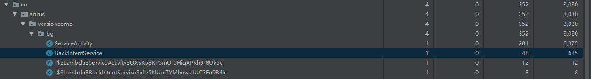

写在最前面
上一篇中我们学习了，Service 的基本用法，两种使用方式，不同的处理。本篇中，我们来通过源码的方式来对 IntentService 和 JobIntentService 进行下总结。看看什么情况下使用这两种特殊的 Service。
IntentService
IntentService 特点
之前我们说过以 startService 方式来启动的 Service 有两个特点：
1.Service 本身运行在启动线程，通常是主线程；
2.Service 在执行完成后不会主动暂停，只有使用 stopSelf 或者 stopService 才会使得服务停止；
针对这两个特点，提出了 IntentService。这个类是 Service 的一个子类。其原理也很简单，内部使用了一个 HandlerThread 和 Handler ，使得 Service 整体工作在 HandlerThread 工作线程,同时重写了 onStartCommand 使得我们不需要考虑如何切换到工作线程，并且使用 Handler 机制，使得事件一个个的传递，并且在全部处理结束完成后关闭服务。这种工作队列处理模型很适合从主线程启动的高负载任务，所有的请求都会被唯一一个工作线程所处理，但是不支持多线程处理也就是一个时刻只能处理一个事件。由于其源码比较简单，我们可以大致分享一下（可能是我看过最简单的源码了）。
IntentService 源码
public abstract class IntentService extends Service {
private volatile Looper mServiceLooper;
private volatile ServiceHandler mServiceHandler;
private String mName;
private boolean mRedelivery;
//ServiceHandler 本质上是以个 Handler
private final class ServiceHandler extends Handler {
public ServiceHandler(Looper looper) {
super(looper);
}
@Override
public void handleMessage(Message msg) {
onHandleIntent((Intent)msg.obj);
stopSelf(msg.arg1);
}
}
public IntentService(String name) {
super();
mName = name;
}
public void setIntentRedelivery(boolean enabled) {
mRedelivery = enabled;
}
@Override
public void onCreate() {
// 创建工作线程 HandlerThread 并把线程中的 Looper 和 ServiceHandler 绑定到一起
super.onCreate();
HandlerThread thread = new HandlerThread("IntentService[" + mName + "]");
thread.start();
mServiceLooper = thread.getLooper();
mServiceHandler = new ServiceHandler(mServiceLooper);
}
@Override
public void onStart(@Nullable Intent intent, int startId) {
//为了兼容早期没有 onStartCommand 版本的 Service，收到数据后封装到 Message 中
// 并抛到 ServiceHandler 中
Message msg = mServiceHandler.obtainMessage();
msg.arg1 = startId;
msg.obj = intent;
mServiceHandler.sendMessage(msg);
}
@Override
public int onStartCommand(@Nullable Intent intent, int flags, int startId) {
onStart(intent, startId);
return mRedelivery ? START_REDELIVER_INTENT : START_NOT_STICKY;
}
@Override
public void onDestroy() {
// 服务退出的时候，将 Looper 退出，避免 Thread 无法结束，导致内存泄漏
mServiceLooper.quit();
}
@Override
@Nullable
public IBinder onBind(Intent intent) {
return null;
}
//用户自己实现
@WorkerThread
protected abstract void onHandleIntent(@Nullable Intent intent);
}
将注释删除后，源码只有这么多，在 onCreate 方法时，Handler 被创建起来，同时和 HandlerThread 的 Looper 绑定了一起，就是说 Handler 会一直处理 Looper 循环里的数据。每次有新的 startService 调用时，总会调用到 onStart 方法中的 mServiceHandler.sendMessage(msg) 这样便把一个信息抛到 MessageQuene 中，等时机合适的时候，会被 ServiceHandler 的 handleMessage 接受到，同时抛向 onHandleIntent 方法。这个方法由用户自己实现，用来处理 startService 的请求。同时在 onHandleIntent 方法结束后，调用 stopSelf（startId）来结束 Service。
原理很简单，这里我们来给出一个 DEMO：
public class BackIntentService extends IntentService {
public BackIntentService() {
super("BackIntentService");
}
@SuppressLint("CheckResult")
@Override
protected void onHandleIntent(@Nullable Intent intent) {
Observable.create((ObservableOnSubscribe<Long>) emitter -> {
int index = 1;
while (index<10){
emitter.onNext(Long.valueOf(index));
Thread.sleep(1000);
index++;
}
}).subscribe(aLong -> {
Log.i(ARIRUS, "onCreate: " + aLong + " " + isMyServiceRunning(BackIntentService.class));
});
Log.i(ARIRUS, "onHandleIntent: ");
}
}
log:
onCreate: 1 true
onCreate: 2 true
onCreate: 3 true
onCreate: 4 true
onCreate: 5 true
onCreate: 6 true
onCreate: 7 true
onCreate: 8 true
onCreate: 9 true
onHandleIntent:
注意由于 Observable.intervalRange() 会后台另起计算线程来进行数据产生，所以我们要手动实现上流数据源，让其产生并工作在当前线程。最后当10个数据记录结束后，onHandleIntent 返回，同时结束了服务。
ServiceLooper.quit
这个方法，我觉得是整个 IntentService 中最值得注意的地方，因为平时我们写代码时是不在意这种细枝末节的。这个方法，如果不调用会怎么样？这个方法如果不调用那么，HandlerThread 会一直在运行，那么 HandlerThread 无法退出，最终会造成内存泄漏。上图

这个是我把 BackIntentService 中 onDestory 方法的 super 方法去掉后的内存分析结果，此时当 stopSelf 调用之后，BackIntentService 的实例依然没有被回收。 那我觉的有必要好好看看 HandlerThread 的逻辑了。
HandlerThread 源码
public class HandlerThread extends Thread {
Looper mLooper;
...
@Override
public void run() {
mTid = Process.myTid();
Looper.prepare();
synchronized (this) {
mLooper = Looper.myLooper();
notifyAll();
}
Process.setThreadPriority(mPriority);
onLooperPrepared();
Looper.loop();
mTid = -1;
}
...
public boolean quit() {
Looper looper = getLooper();
if (looper != null) {
looper.quit();
return true;
}
return false;
}
...
}
我们知道，Thread 需要实现 run 方法才能进行执行，那我们来看其方法的实现。首先是 Looper.prepare() 来准备 looper，接着加锁来获取 looper，最后就是进行 Looper.loop() 的循环，我们再看下 loop() 方法：
public static void loop() {
final Looper me = myLooper();
...
final MessageQueue queue = me.mQueue;
...
for (;;) {
Message msg = queue.next(); // might block
if (msg == null) {
// No message indicates that the message queue is quitting.
return;
}
msg.target.dispatchMessage(msg);
}
...
}
loop 方法已经很明显了，循环的从 Looper 中取出数据，然后发送到相应的 TargetHandler 中进行处理，如果当前队列中没有了 message 直接退出就好了。那么退到了 HandlerThread 的 run 方法中，最后 Thread 结束运行。一个 HandlerThread 便结束了运行。再回到最开始 mServiceLooper.quit() 方法：
void quit(boolean safe) {
...
if (safe) {
removeAllFutureMessagesLocked();
} else {
removeAllMessagesLocked();
}
...
}
private void removeAllMessagesLocked() {
Message p = mMessages;
while (p != null) {
Message n = p.next;
p.recycleUnchecked();
p = n;
}
mMessages = null;
}
很清晰，就是把 MessageQueue 的所有 message 全都回收了，也就是消息队列中不再含有任何 msg ，那么在 Looper.loop() 方法中会直接 return，HandlerThread 结束了 run，系统可以将其回收了。所以如果在重写 onDestory 方法中如果没得调用 super 方法，HandlerThread 会一直持有外部类的引用这里就是 BackIntentService ，最终造成内存泄漏。
结论
IntentService 是以个在处理后台任务上非常有用的工具，使用他我们不用担心线程的切换，可以直接在 onHandleIntent 方法中，做耗时的操作；同样也不需要关心停止 Service 的操作，当没有 msg 时会自动结束 Service 服务。当然也有缺陷：任务是按照顺序在工作线程中执行，不能并发执行；一个请求在执行的时候是无法被打断的。
JobIntentService
这里还没想好怎么写，占个坑。